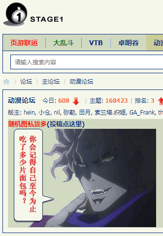
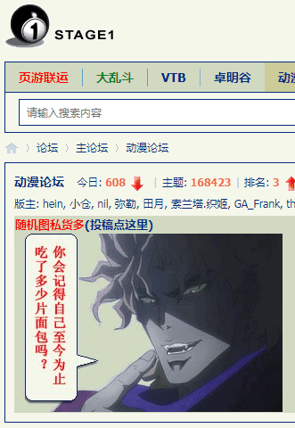
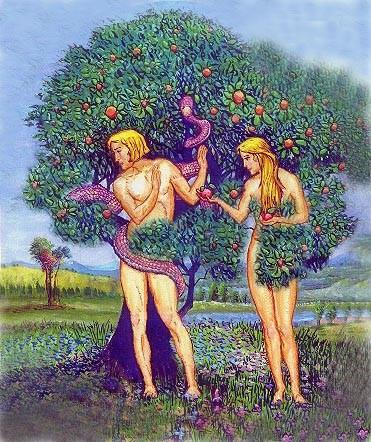

现在繁荣的简体中文互联网上热度最高的新闻是「郭敬明道歉」，已经作为情报补充进《文人相轻与大数据》当中去了也。而《设定集》这边专注政治和意识形态，所以仅仅在第三篇设定《教内无派千奇百怪》补了一条脚注，热度次高的新闻「蒋凡和阿里没有自知之明」。
如果说这其中的关系，还要判断捅妓上的相关性。正如有识之士的真知灼见所指出的那样，但凡娱乐圈闹新闻刷榜霸屏到处炒作，一定是为了掩盖更大的新闻。无论是《赞歌献给陈冠希》还是《宋喆骑马浪里个浪》都一样，这次也不例外。所以，眼光雪亮的群众和智慧无穷的人民，就应该无视这些娱乐至死の色目逗哔在大手情报机构集中统一领导下按照兵不厌诈军事理论从事战略欺骗的烟幕弹障眼法，把注意力集中到其拼命轻描淡写的情报当中去。
比如国际一流和谐宜居之都「高学历精英社交圈」正在首页今日头条位置醒目应景推荐的色目含量甚高的重要情报：

 


再比如耍钱的新浪或曰后浪奔走相告的新时代华视点报道的「重大利好」情报：

当然，南直隶「远东第一体育论坛」之上武德充沛的脑壳里除了红色液体就是白色液体的肌肉棒子也在哀嚎「我看呐，这中华民族怕是要完」：
具体到《设定集》，就是之前预告的古埃及相关的地点在开罗的一篇，正好结合最近局势，说科普特人被伪装成同胞的歪脖斜肩方脸大耳鼻「秃鹫突厥系色目太君」张口闭口「伟大复兴」的「民族主义」营销套路诈骗，好比正文中已经出现的「是荷兰人就支持郁金香啊啊啊啊」「追随加尔文阁下就支持郁金香啊啊啊啊」一样。
上面这段，照样「无一字无来历」，言必行行必果硁硁然，出处来自屎绿配色的国际化大都市「华语第一精日论坛」之上娱乐至死の色目逗哔，解读标注在图上：

说过了在新时代版规「莫谈国事只谈风月」的「Obey or Die
」政治规矩和组织纪律之下，这帮逗哔现在只能指桑骂槐了。人贵有自知之明嘛，不要有受迫害妄想狂嘛，要按照行政级别和福布斯榜排名从上往下捋嘛。第一个筛查对象就符合「学术造假」标准，如果色目情报掮客千方百计搬进防火长城内传播的在维基解密之上透露的巴拿马文件里面没有造假的话。
果不其然，最新情报传来，双方屁股都不干净，不惮以最大的恶意揣测解读就是郭声琨要与習禁评死磕到底了：
再看露骨一点的情报：
已经刺刀见红了。奇幻の2020年，真有趣哉！
刚爬起来酒劲还在头昏脑胀，上网乱转发现了大批色目含量甚高的情报和素材。
首先是九省通衢の煎蛋，提供了有实体出版物出处的意识形态斗争：
正如有识之士の真知灼见反复强调的那样，达尔文主义生物学是「非线性演化论」，斯大林主义生物学才是「从简单到复杂，从低等到高等，从原始社会到奴隶社会到封建社会到资本主义社会」的「线性进化论」或曰历史唯物主义或曰辉格史观。所以，卡壳世界这个奇葩流形的演化路径并未确定，按照唯心主义原则与存在于其中的意志互动。
简单说，就看本位面历史和现实当中被大手情报机构策反的高学历精英充当色目情报掮客把持话语权颠倒黑白混淆是非吹捧岛夷贬低大陆的舆论一浪高过一浪，包括但不限于《政治挂帅与学牛强国》当中提到的情况，结合牛顿本人皓首穷经拨乱反正「肉身成圣」原教旨主义但仍不敢正面挑战主流修正主义「道成肉身」，以及「神人二性不混合不改变不分离不分割」的奇葩缝合怪教义，就能体会到为啥《设定集》的年代卡壳世界近似S3×S1的绝对时空观了。
而在屎绿配色的国际化大都市「华语第一精日论坛」之上出现了草绿配色的目前还不知道是哪个宣传阵地的爆料，果然不出所料，娱乐圈搞个大新闻肯定是为了掩盖更大的丑闻，并且还与岛夷有关：
所以一点都不奇怪，学术态度端正并擅长构造反例打脸摑面的魏尔斯特拉斯，在岛夷把持的高学历精英社交圈当中，就是「反派」，大批岛夷培训的高学历精盎变着花样的颠倒黑白混淆是非倒打一耙贼喊捉贼造谣污蔑栽赃陷害，伙同娱乐圈将其抹黑为「丑角」。这段学术史已经在第十九篇设定开头化用了。
而屎绿配色的国际化大都市「华语第一精日论坛」本身，提供了之前大批色目情报掮客不打自招爆料泄漏的国家机密兼宇宙奥秘之合集，这里只保留知名度甚高于是经常被满口「Hello KittyHowdy Pussy」的色目文艺工作者运用为放风带节奏素材的内容：

这都是架空中「喵喵社」的现实原型。
而国际一流和谐宜居之都「高学历精英社交圈」的首页今日头条位置醒目应景推荐的情报，色目含量不够，并且使用帐号疑似集体署名的码字工作室营销工位，因此仅摘录素材：
冰岛语「坦克」（striðdreki）＝爬行（strið）＋ 龙（dreki）
可以作为第九篇设定《有子七人莫慰母心》中「履险如夷曰坦，无坚不摧曰克，故名“猛犸坦克”」的本土化解读之旁证。
顺便，「龙裔」的线索，在第十九篇设定结尾已经展现了一部分。正如色目人自己炫耀十四万四千张诺亚方舟船票或曰以色列护照那样，将异族斥为「狗苟蝇营」，证明了色目人的起源，和智人的起源并不相同。这在《设定集》当中以本位面尼安德特人、克鲁玛侬人之类现实生物类比。
- 能人
- “瞧把你能的”
- 匠人
- 自由的工匠精神
- 树居人
- 平时住在树上饿了下地捡个果子吃

- 直立人
- 平时住在地下饿了上树摘个果子吃
- 先驱人
- 革命导师
- 马鹿洞人
- 馬鹿野郎落户三洞
后来嘛……形成「并系群」，色目高学历精英还主动运用斯大林主义生物学技术与其它本来存在生殖隔离的物种杂交并美其名曰「进口新时代鲜血液注入武德实现民族大融合」。因此以复旦残联下属滴血认亲实验室为典型的各种大手斯大林主义生物学机构鉴定「色目含量」在战后希伯来太君扬眉吐气之时，就成为了一门显学。
所以，情报「秃鹫突厥系色目太君」简直就是直说了「可萨汗国余孽」，在我中华兲朝上国怎么从内亚渗透到江南的，在彼欧罗巴就怎么从黑海流窜到北海的，既来之则安之，从流寇变坐寇，太阳底下没有新鲜事。
说时迟那时快，屎绿配色的国际化大都市「华语第一精日论坛」之上，出现了一条色目含量甚高的重要情报：
弦外之音已经补全在图上。
这下现实政治和意识形态斗争的线索又都串起来了也。
最后补完第十九篇设定《昔在上圣昭事百神》正文里部分内容在前面注释中没有提到的部分。
其中「佛郎机文物贩子」出场不仅仅是影射现实，还呼应了剧情中「巴格达电池」的伏笔。
而尺规作图与共济会标志之间的渊源也显而易见。
座钟颜色变深肯定与亡灵法术有关，在否极泰来的冬至或曰百鬼夜行之日有个谁显圣显大，于是画符捉鬼给大哥大充电。
这一套对活人来讲是「狩猎女巫」「摄魂术」，对死人嘛，正如第五篇设定《爱与正义与红灯区》结尾中运用水晶收集「精神」那样，不见天日的「夜间太阳神」在长期的生产生活斗争实践当中与「安哥拉·马一扭」阵营形成了「趋同进化」。
而「预成论」当中「精源论」「卵源论」的分歧，在神话始祖是男是女还是雌雄同体怎么个孤雌生殖或孤雄生殖当中，已经体现出来了也。
总之，「披荆斩棘的2020，洛仑兹与费根鲍姆之年」啥也没干就已经过去了，今年的尊号还没想好，恶补计划也不知道会顺延多久，年底再说吧。